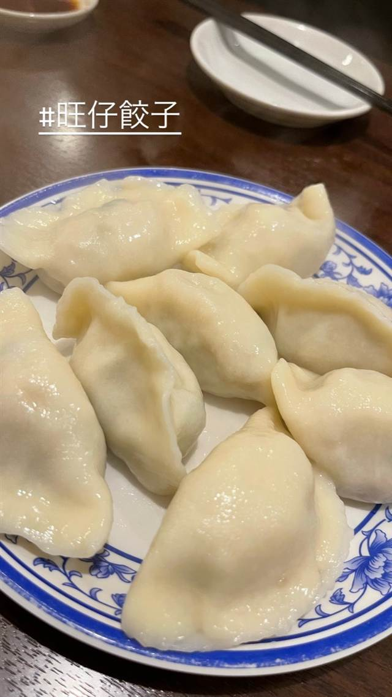

町中華 · 餃子専門
旺仔餃子
REVIEWS
世間の評判
3.14食べログ
もちもち餃子と本格町中華
- 皮がもちもちで肉汁たっぷりの餃子を評価する声が多い
- 700円からのランチのコスパを評価する声が多い
- 全席喫煙可で煙が気になるという声がある
食べログ 口コミ63件
食べたもの：水餃子
NEARBY
近い店・同じ系統の店
-
 餃子専門 亀戸駅
亀戸餃子 本店
座ると自動で2皿確定、1955年創業の下町餃子専門店
昼 ～¥999 夜 ～¥999
餃子専門 亀戸駅
亀戸餃子 本店
座ると自動で2皿確定、1955年創業の下町餃子専門店
昼 ～¥999 夜 ～¥999
-
 餃子専門 幡ヶ谷
您好（ニイハオ）
ひき肉でなく粗く刻んだ肉を使う、連続ビブグルマンの餃子
昼 ¥2,000～¥2,999 夜 ¥2,000～¥2,999
餃子専門 幡ヶ谷
您好（ニイハオ）
ひき肉でなく粗く刻んだ肉を使う、連続ビブグルマンの餃子
昼 ¥2,000～¥2,999 夜 ¥2,000～¥2,999
-
 餃子専門 乃木坂
赤坂珉珉（みんみん）
酢コショウで食べる元祖、渋谷の名店直系ののれん分け店
夜 ¥4,000～¥4,999
餃子専門 乃木坂
赤坂珉珉（みんみん）
酢コショウで食べる元祖、渋谷の名店直系ののれん分け店
夜 ¥4,000～¥4,999
-
 餃子専門 銀座一丁目
銀座天龍 本店
ニンニクを使わず白菜と豚肉だけで作る12cmの大判餃子を創業以来守る
昼 ¥1,000～¥1,999 夜 ¥3,000～¥3,999
餃子専門 銀座一丁目
銀座天龍 本店
ニンニクを使わず白菜と豚肉だけで作る12cmの大判餃子を創業以来守る
昼 ¥1,000～¥1,999 夜 ¥3,000～¥3,999
-
 餃子専門 飯田橋駅
餃子の店 おけ以
東京に焼き餃子を広めた老舗、羽根つき餃子は1日1300個
昼 ¥1,000～¥1,999 夜 ¥1,000～¥1,999
餃子専門 飯田橋駅
餃子の店 おけ以
東京に焼き餃子を広めた老舗、羽根つき餃子は1日1300個
昼 ¥1,000～¥1,999 夜 ¥1,000～¥1,999
-
 餃子専門 恵比寿駅
えびすの安兵衛
高知の屋台仕込み、にんにくの効いたジューシーな餃子
夜 ¥1,000～¥1,999
餃子専門 恵比寿駅
えびすの安兵衛
高知の屋台仕込み、にんにくの効いたジューシーな餃子
夜 ¥1,000～¥1,999